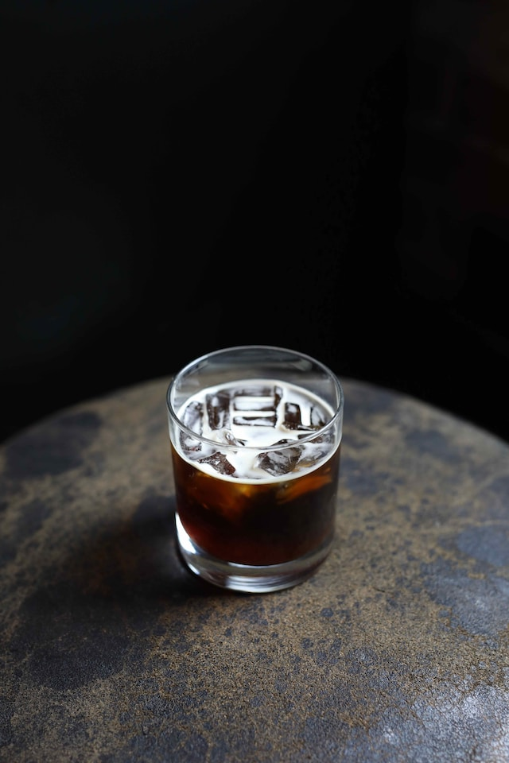

-
에스프레소
-
아메리카노
-
카페 라떼
아메리카노

커피의 일종인 에스프레소에 뜨거운 물을 희석시켜 만든 음료.
아메리카노라고 줄여서 불리지만 정확한 명칭은 카페 아메리카노(Caffé Americano)이다.
이탈리아어인 'Caffè Americano'를 영역(英譯)하면 'American coffee'이지만 영어로 쓰이는 경우는 없다.
카페 아메리카노의 정확한 유래는 불분명하다.
윌리엄 서머싯 몸의 1927년 소설 《어셴든, 영국 정보부 요원》에서 주인공이 제1차 세계대전 도중
나폴리에서 '아메리카노'라는 것을 주문하는 묘사가 나오지만, 여기서 다뤄지고 있는 아메리카노라는 것이
현재의 아메리카노를 가리키는 것인지는 불명확하다.